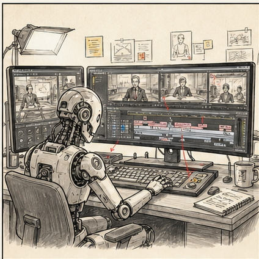

найти фрагменты
Получить 5-7 clip candidates из длинного видео или расшифровки.
Показываем редакциям не мечту про автосюжет, а реальные ускорители: расшифровка, поиск фрагментов, автонарезка, паузы, multicam, субтитры, вертикальные версии и rough cut.

Получить 5-7 clip candidates из длинного видео или расшифровки.
Понять, где AI быстрее: паузы, субтитры, rough cut, multicam.
Связать transcript, монтажный ассистент, Premiere / Resolve и quality gate.
Понять, какие инструменты уже надо тестировать в редакции.
Мы не говорим "доверьте AI монтаж". Мы говорим: снимите с себя черновую механику там, где она уже автоматизируется, и оставьте человеку вкус, контекст и финальное решение.
Автопереключение камер по говорящим и аудиодорожкам.
Удаление пауз, filler words, bad takes, экспорт XML обратно в монтажку.
Поиск фрагментов, вертикализация, субтитры, scoring, публикационный пакет.
Первые сценарии, где ассистент управляет таймлайном или экспортирует проект.
Ты ассистент видеоредактора.
Материал: [транскрипт / таймкоды / описание видео].
Цель публикации: [информировать / объяснить / вызвать обсуждение / анонсировать].
Аудитория: [кто смотрит].
Запреты: не вырывать из контекста, не усиливать конфликт, не обещать больше, чем есть в видео.
Сделай:
1. Карту видео по смысловым блокам с таймкодами.
2. 7 кандидатов на вертикальный клип.
3. Для каждого: hook, начало, конец, риск потери контекста.
4. Отдельно: что монтажер должен проверить руками.
5. Топ-3 для производства и почему.Вставить транскрипт или описание, получить карту видео.
Выбрать 7 кандидатов, выкинуть слабые и рискованные.
Собрать top-3: hook, subtitle chunks, cover text, risk note.
смыслне вырезаем фразу так, чтобы поменять позицию героя
тонне делаем трагедию, если в источнике спокойное объяснение
ритмAI может резать, но финальный темп держит монтажер
брендсубтитры, обложки и графика проходят визуальный gate
1. Ссылка на source / transcript.
2. 7 кандидатов и top-3.
3. Что AI предложил плохо.
4. Что монтажер поправил руками.
5. Какой инструмент стоит тестировать дальше.